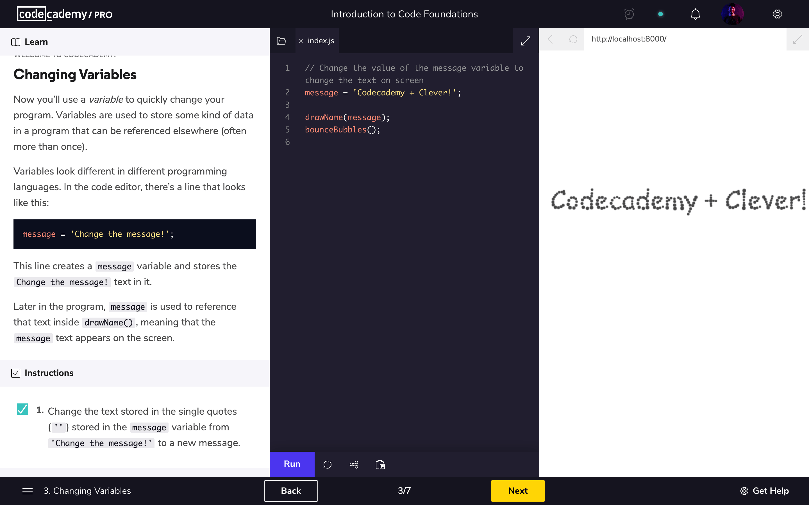

PROGRAMMIEREN
Der erste Schritt ist schwer
Um mich optimal auf die Lehrstelle vorzubereiten, habe ich mir die Hilfe von uwei Informatikern und einem Mediamatikern geholt, die mir im Programmieren aushelfen konnten. Im Dezember 2020 habe ich mir den vollen Kurs auf Codeacademy gekauft und vor allem die Verwendung von HTML und CSS gelernt. Später habe ich auch noch JavaScript angeschaut, jedoch verwendete ich dieses nicht für die Website. Ich habe über 60h in Codeacademy verbracht und kam auf die Idee um mein Wissen auf die Probe zu stellen und mich besser auf die Lehrstelle vorzubereiten eine eigene Website zur Bewerbung bei Swisscom zu programmieren.

Codeacademy hat ein sehr benutzerfreundliches Interface und die Übungen sind optimal gestaltet. Links ist
die Aufgabenstellung, in der Mitte der Code und rechts die Seite die man mit dem Code programmiert. So
kann man die ganze Zeit sehen was man programmiert und auch während der Übung mit verschiedenen
Werten ausprobieren. Ausserdem ist Codeacademy teil einer grossen Community die mir bei sehr vielen
Fragen zur Hilfe stand. Seit März habe ich täglich mindestens 20 Minuten in Codeacademy verbracht. Ich bin
jedoch noch lange kein Profi und ich konnte diese Website auch nicht ganz ohne Hilfe erstellen. Wenn mir
jemand geholfen hat, habe ich das ganze im Livestream verfolgt und dabei mitgelernt. Ich konnte die Aufgabe
nicht ganz allein meistern, aber ich habe viel Erfahrung in diesen fünf Monaten sammeln können. Nicht nur
im Programmieren, sondern auch im Designen, Planen und in Fehlersuche und Geduld. Es war eine sehr
wertvolle Erfahrung und das Programmieren machte mir grossen Spass. In einem späteren Artikel werde ich
noch genauer auf die Webseiten Planung und das Programmieren eingehen.
Das Resultat von diesem langem Prozess sehen Sie hier auf der Website!